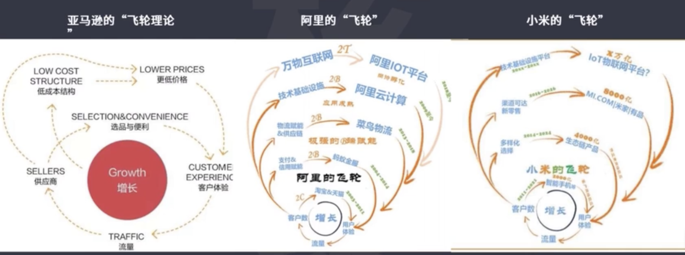
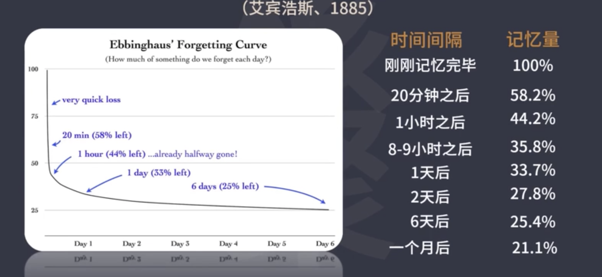
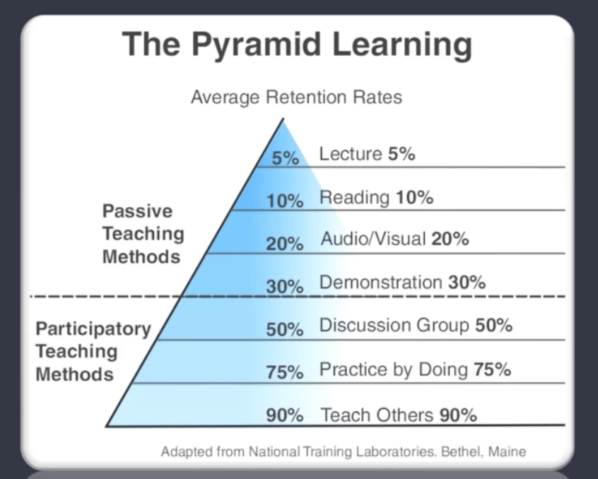
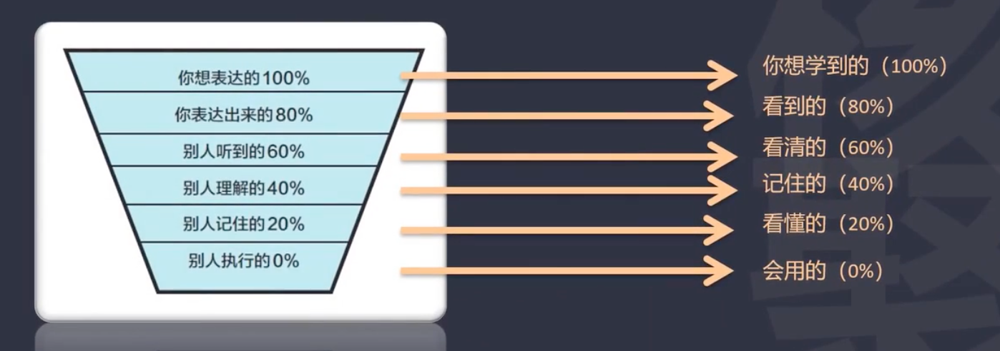
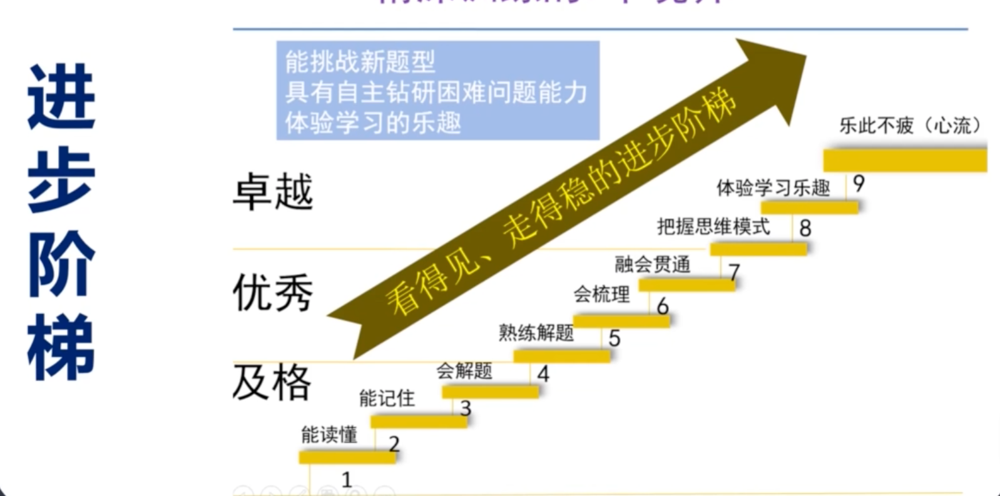

1. 核心算法
- 知道自己是如何学会的
- 回顾不忘、类推
- 学会（下）一个
什么是学？
学的本质是模仿
冯先生学英语的秘诀：
- 背诵好文章（例如著名的小说，百科全书）
- 他的背诵极其精准——只字不差（促使他跟人交流的时候，能用更高级的语言，精准的高级语言）
- 学语言的同时拓展了他对其他领域的知识和文化的认知
- 这并不需要天生的超常记忆力
林语堂：
学习英语的唯一正轨，
不出仿效与熟诵。
仿效要是整句的仿效
热诵则效仿之后必回环练习
最重要的，是学时必整句吞下
再整句吐出来
每日选二三句
回环熟诵
什么叫回环练习？
天文学著作看上去看困难，中学生想读懂大学的天文学教科书非常困难。但是你从头开始往下读，读哪卡住了，再从头开始读。原来卡住你的地方就卡不住你了；再持续推进，再从头开始读，这叫回环练习；
为何整句仿效，整句吐出？
整句会有明显的成就感和收获感，随着时间的推移。这种收获感会越来越强。会让人上瘾，这是强调整句的重要性；
为什么是两三句呢？
第一就是每日选两三句，可以确保能拿下来。
另外一个随着时间的推移，一天两三句，十天就是二三十句。一百天就是二三百句。这二三百句你都要回环熟诵的。这样工作量就大了。
—— 牛人的英语读诗模仿来的，牛人的记忆力都很厉害
丘吉尔（诺贝尔文学奖）： 背诵麦考利的1200行史记
辜鸿铭（9国语言）： 德语背诵歌德的《浮士德》、英语弥尔顿的《失乐园》
阿西莫夫（最高产的科学科幻作家）： 背诵《伊利亚特》
苏轼 背诵80万字的《汉书》
1.1 学习的本质
按照学习的本质定义学习就是捷径
思维训练程序
- 选择优秀文章背诵，具有永久价值、不枯燥、历久弥新
- 拆成单个句子，复杂句子拆分成短句
- 循环往复、循序渐进背诵、默写
- 理解文章含义
- 背诵下一句之前，把以往所学背默一遍，遇到卡顿错漏重复背默；
- 直到这些文章成为自己身体的一部分，随意调遣使用；
“不要为你在数学上遇到的苦难感到担忧，我可以向你保证，我遇到的困难更大”
—— 爱因斯坦
1.1.1 回环练习
顶级数学家如何学数学
“对我来说，没有比数学书更难念了，数百页的书从头到尾念至难念完。因为知道“数学”读懂了，也就是成为最简单不过的事情而已。所以只念定理。努力想了解它。证明就自己想。而在一般情形之下是想不透的，只好看书上的证明。但是读一两次也不觉得懂，便把证明写在笔记上看看。这回注意到证明有不中意的地方，就想有没有别的证明法？这样子好不容易读完一章时，前面的部分已经忘了。没法子，又从头复习。这回倒在意起整本书章节的排列方式来。”
这不就是林语堂说的 “回环练习”吗？
这回倒在意起整本书章节的排列方式来，他发现前后章节有联系的。你从后面的知识能理解前面的知识，你前面的知识可以有助于理解后面的知识。这是什么？ 这就是融会贯通。
短期内突破的思维程序是什么？
第一点 基本概念基本定义一定要背熟，尤其像数理这样的学科。
第二点 能够独立推导出来的一切可以推导的东西，你一定要独立去推导；而且要推导得熟练。比如说课本上教科书里面有的定理公式的证明和推导，这个过程你一定要熟练的掌握。
因为这些基本定理、基本公式的推导证明过程就是数学思维的核心
什么是核心？
就是你在所有的数学的阅读理解，读书做题的时候，你会反反复复一而再再二三地运用这些思维方式。
数学最核心的思维操作。就是蕴含在定理公式的推导和证明里面。所以必须拿下，拿下就意味着，很可能你会达到一通百通的状态。你不知道是第几个定理证明，你熟练之后你突然豁然开朗。
数学原来如此简单；不就是这几套思路反复用对不对？一通百通，效率就大大提升。
第三， 当你这么去做的时候。你去抄写去背诵去默写定义概念，去尝试理解它、去尝试推导定理公式的时候。你会有很多感悟、很多感想。那你把它记下来。一定要将它记下来。这是宝贵的财富。这是你付出努力的一个重要的收获就是你的感悟。你突然发现数学是怎么回事了。数学思维是怎么回事了。把它记下来；
1.1.2 进步本
然后，弄懂的题目要装进进步本里面去；你不会做的后来会做了，做错弄正确了的。你要放进进步本里面去。去反复的复习。因为你错了，那意味着你之前的认知一定是有错的地方。你能把它补上来，还有不会做的题目你弄懂了，为什么弄懂了，一定是之前的概念定义， 要不然忘掉了，要不然是理解错了。现在纠正过来了，为什么不要记录下来？
第四点 要反复重复做标注，达到不忘达到熟练。就是回环练习。把卡住的地方弄错的地方不断标注强化它；
第四点就是回还往复的循环渐进，用前面的知识理解后面的。反之亦然，用后面的知识理解前面的。达到融会贯通。
“优秀者模仿，伟大者剽窃” —— 乔布斯
牛人都来自模仿牛人
1.1.3 学习=模仿+刻意练习
爱因斯坦： 牛顿、麦克斯韦、。。。。
巴菲特： 格雷厄姆、费雪
马斯克： 乔布斯、福特、洛克菲勒
稻盛和夫： 王阳明 松下幸之助
孙正义：坂本龙马、松下幸之助
刘强东： 沃尔玛的山姆博尔顿
1.2 思考题
你最成功的模仿经历是什么？
这就是你迈向高效能学习的一个台阶
2. 让学习成为一种习惯
学会一个东西有多难？
2.1 康奈尔笔记法
记录： 在听讲或阅读过程中，在主栏尽量多记
简化： 课后，及早将归纳、提炼记录在副栏
背诵： 把主栏遮住，只用回忆栏复现所学
思考： 记录各种问题、感悟体会
复习： 每周花十分钟左右时间，快速复习笔记
学习会产生生理变化，所以需要反复练习；
2.1.1 康奈尔笔记法跟进步本是什么关系？
进步本把记忆法则推到了极端、极致。
比如记录这个环节，把当天所有的进步，知识点、框架、框图、做错的修正过来的。不会弄懂的题目全都要记进去，而且要标注一切让你感到有收获的地方。包括思路技巧方法知识点等等。
然后第二步复习，记在本子上的东西是潜在的进步。那不是你实在的进步，除非巩固住了，那才是真实的进步。
如何巩固住。随时随地的检测式的复习
康奈尔说，通过五步。后面每星期复习10分钟，那是不够的。你要产生极端的效果。你必须随时随地的复习。还要检测式的复习。自己考自己，拿什么叫做随时随地？ 当你回忆起来映像模糊了，你赶紧回去重复， 标注。 包括题目， 题目感觉已经做会了。做会了哪够啊？考试都是计时的，你必须要熟练。熟练都不行，还要高度熟练。那题目反复做做到熟练。然后知识的话就要在大脑里面反复呈现。然后知识的话就要在大脑里面反复呈现。呈现以清晰为标准。
越高水平的人对细节的关注越是变态
天下大事必作于细，天下难事必作于易 —— 道德经
- 记录 潜在进步，记录当天所有进步，知识点、框图、做错误修正的，不会弄懂的题目
- 复习巩固，随时随地的检测式复习，随时随地的考自己。题目反复做直到熟练，知识反复在大脑中呈现直到清晰，过程中不断标注，丰富进步本内容
- 检测发现进步空间 做题，测试。模拟考试，努力去发现还有哪些不会做的题目，还有哪些模糊点，发现进步空间
2.1.2 好的进步本是什么样
第一就是题目和答案要分离，目的是为了方便考察自己。这就叫真的学习，必须这么做。
那么第二点要分析所有选项的正误。知道正确的，但是那几个不对的选项它为何是错误的，你要去分析。一道题知道哪个对是不行，还要知道剩下的为什么不对。假学习浪费生命
分析出题人的意图，一道题目你都要整理道进步本了。目的是什么，目的是你要百分之百的把这个题目都掌握了。为什么会这么出题？这个题目为什么是合理的？它能成为一道考题。出题是很难的，题目本身的信息量是远远大于答案的。还大于解题过程。所以在抄题过程中，要分析它为什么这么出题。如果从题目到解题过程到正确答案全都分析透的话，那你就能够出一道类似的题目。那知识真的掌握透了
一道题，题目写得很清晰。各个选项都写的清晰。还有把这个图也配得非常好。然后正确答案写很后面不起眼的地方。这就非常有利于后面再考察自己；
2.2 学习的根本价值
学习的根本价值就是创造价值，一个人将来在社会上立足；
立足的根本就是给别人提供服务。提供有价值的作品，有价值的东西；那么你从学习的过程中就在做这件事情。你想想他的将来的前途如何？一定比好多人都光明的多；
2.3 让学习成为创作艺术
从一开始就按照大师的水准要求自己，想要成为顶尖学者吗？那么，学习的时候就要力图写成一本书。
想成为领域的专家，无论是什么领域。只要你想成为顶级专家。当你学习的时候，你就要力图写成一本书。
2.4 笔记的等级
为什么说你从一开始就要按照顶级的水平去做呢？
因为“信念即自我预言效应”，这么去想这么去做。这么实现的可能性就大。如果你一开始笔记都记得乱七八糟的。就不要想成为哪个领域专家。
你从一开始一点一滴的就按照最高的水平去要求自己；
3. 极致心态
把能把握住的点滴做到百分之百，每一块砖每一块瓦人生大厦的基础材料你做好。那么后面的各种可能性就都出来了。
99% is the same as zero, if you are gonna do 99, go ahead and stay home -- Will Smith
欲求其上，必求上上；
想取得很好的结果，必须要要求自己达到杰出的、顶尖的水平；你才能有更大的可能性达到你想要的非常好的结果。
能不能达到100%是第二个环节，第一个环节是力图去达到。然后才有更大的可能性达到。
各个领域的高手全都是这样子 —— 对自己要求，标准，目标是极高的；
要去淘汰自己，否则会被对手淘汰。
3.1 进步回路：
- 记录潜在进步，记录当天所有的进步，知识点 框图，做错修正的，不会弄懂的题目标注一切让你感到收获的地方，包括思路，技巧方法和知识点；
- 复习巩固进步，随时随地的检测式复习，随时随地考自己，题目反复做直到熟练，知识反复在大脑中呈现直到清晰，过程中不断标注，丰富进步本内容
- 检测发现进步空间，做题，测试，模拟考试，努力去发现还有哪些不会做的题目，还有哪些模糊点，发现进步空间；
3.2 思考题
- 在你学业中，哪个环节做到了极致？效果如何？
- 哪个环节，你可以做到极致？
4. 让成就感加快学习步伐
4.1 聪明的目标
具体
可测量
兴奋
现实
时效
当你把目标做的足够细小的时候，那么这个smart目标就容易设定了。不但容易设定，而且容易达成。不但容易达成，而且容易频繁地体验到成就感。让目标粉末化
比如一句一句学好英语，具体到几分钟之内就完成一句的目标；
4.1.1 实例： 5篇文章
那么这5篇文章可以分成五组
5篇（为一组）是一个里程碑
第一组，已经突破，建立自信，建立方法
第二组， 挑战更大，训练元认知
第三组 ， 进入细节，整合到自己的生命
第四组， 浑然忘我，欲罢不能
第五组， 整体回顾，构建强大的知识体系
以前没有完整地熟练过一篇文章，一旦一篇文章拿下来了。那是突破的感觉就形成了，然后就建立了自信。第一篇拿下了，以此类推第二篇也可以拿下来。除了建立自信，还建立了方法。
如何将一篇文章拿下来的方法已经建立了。往后无非是重复一遍再把各个环节精致一下，精炼一下，做到更好。训练元认知；
进入细节，尝试去调用这些文章。假如写一篇新的文章。写作上你能不能用上其中的句子。你要整合到自己的生命里去。
到了第四篇的时候，那可能就是浑然忘我了。熟能生巧。不断不断体验到这种成就感，欲罢不能了。
第五组的话，就是你可以把第五章文章拿下来。五篇文章综合起来，整体回顾。那就能够帮你构建一个强大的知识体系了；
五篇长文，托福级别的长文它包含着很多知识的细节；所以这五篇文章就是一个里程碑
21篇文章200多个句子，就能产生这么大的效果吗？
4.1.2 书籍推荐
《微习惯——简单到不可能失败的自我管理法则》
从很小的小细节小单位做起，它很容易入手；那么行动又促进你的认知，行动产生效果；效果又牵引着你继续去行动逐渐养成了（习惯）
4.1.3 上瘾
目标粉末话=频繁体验成功=上瘾
学到了什么 大于 学了什么
学到什么说不清 = 慢行自杀
4.2 思考题
- 拟定的目标总是达不成，原因是什么？
- 你有哪些成功达成目标的经历？（哪些可以继承和复制）
5.构建学习方案，
构建学习方案，增幅学习效果，指数增长
5.1 方案和计划
什么是方案
所谓方，药方。能显著解决问题
所谓案， 它要极其缜密，要像破案那样子
实现指数增长的巴菲特
- 不要亏钱
- 永远不要忘记法则1
学习也是如此，忘掉的知识就等于亏了吗。所以需要温故。然而一旦投入学习的时候 就会忘记法则一。
新学的东西 - 忘记的东西 = 退步
第一法则： 不要遗忘，就是反反复复的回环去复习。去确保已经学到的东西百分之百掌握了，然后再图进步。 （高筑墙，广积粮，缓称王）（结硬寨，打呆仗）
第二法则： 永远不要忘记法则1
5.2 三小时见效的数学课
你觉得数学这一科里面哪个专项或哪一章哪一节是你的弱点；别选最难的，选那些花一些力气就能够见效果的章节。
把这样的章节的题目分成5组或6组，每组5道题或者6道题。分组练习，每一组都用这个进步本的方法。6道题做下来，发现错了3道。要详细把这三道题目整理下来，你到底从这道题里面学到了什么。不管是请教同学还是老师，把题目弄懂，这些为何自己不会 以及后来听懂之后的思路原原本本记录再进步本里面。记录的过程中就是熟练的过程，加深记忆，加深理解的过程。然后这三道题整个梳理完之后，你要重新做一遍。那叫做进步本的复习和巩固环节。
虽然通过这个读答案或者听同学讲明白了，但是你独立的重新做能不能再做出来那是两回事。你必须要确认你能够做出来。这三道以前做错的题目或者不会做的题目。你真的弄懂了会做了。然后你再进行下一组的练习。下一组的五道题或六道题目去练习。那么在大多数情况下它是一定有进步的。
比如第一组只有50%的正确率，那么第二组就70%的准确率了。第二组依然按照这个回路迭代。就又掌握了一些解题技巧，方法，思路。你再巩固再把之前的你做错的部分再重新做一遍。不单要记住，而且要熟练，还要去理解，增加这个熟练度。然后你再进行第三组练习。因为题型很少。随着组数增多，正确率会可预见的提高的；
内心感触是什么？
是知识高度清晰了，而且高度熟练。然后信心油然而生就这样一个过程。
一天之内实现学习越迁
- 巩固所学，永远是最重要的
- 划分明确的专题
- 分组练习，力图达到100%正确率，实现越迁
5.3 思考题
- 如何可持续的跃迁
- 如何体验到熟练掌握知识的感觉？（对于没有100%掌握过一个东西的人来讲的话，他很难有学到一个东西的感觉。就学习的高级状态是什么他很难体验到，这个只能通过自己努力实现了）
6. 构建增长引擎
我不断地看到有些人在生活中越过越好，他们不是最聪明的，甚至不是最勤奋的，但他们是学习机器，他们每天夜里睡觉时都比那天早晨聪明一点点；
—— 查理芒格
机器的本质是什么？
持续运转，而且可以组装和改进它；那么对于人来讲，实际上本质就是一套思维的程序。
6.1 学习算法
学习算法可以称得上是终极学习方法的一个算法，一旦掌握，那我们对自己的人生的发展趋势就能够有预判。
这个核心算法是什么呢？
三个环节
第一： 我们每个人无论遇到多么复杂的知识和技能，一定能学到其中的一点。尤其是最开始那一点。一定能学会的。
第二： 我们知道如何学会，学会的过程，哪怕是一个很微小的点。要知道如何去学会，
然后第三个环节，是学会的东西。不要再忘了，就不断去巩固它。通过巩固，别再遗忘然后再把这个学会的过程类推到学更多的东西到下一个
比尔盖茨
如果你指定一个明确的目标，并且找到一种能够朝着目标推进的计量手段。就是某种反馈回路那样的计量手段。他说： 你就可以取得不可思议的进步。
对应上面的内核引擎，尤其对于数学物理这种理工科的知识，它是层层递进的，是个大厦的结构。做完钱一个，才可能学道后一个，那意味着什么？就是你是不是真的学到了一个东西是能够得到检验的。当你钱一个东西没有把握住的时候，前一个知识点没有掌握的情况下，你不可能往前推进的，你只要往前推进就意味着你掌握了前面的东西。所以，这构成了一个明确的回路。
另外 这是一个计量手段，一章一节你是用多长时间完成的？然后完成了多少题目？这里面含了多少个知识点，重复了多少遍？这都是可以计量的。一旦你有这个量化的形式来度量自己的学习效果和进步的速度。那你就可以去改进它，不断去改进它。这就是很多人在用的这个手段。一种工作 学习高效能的手段。
ok 那我们看这个进步本是不是也满足这个条件？
进步本就把刚才那个核心算法把它给升级了，就在那个基础上做了一个升级。升级到我们学习过程中更宏观的三个环节。比如记录，大家所有人都在做记录是吧？听课笔记，读书笔记等等；我们只不过是在进步本里面要求把这个环节做到极致；
首先呢，就是任何一点你感到有收获的地方，把它记下来。无论是知识还是题目还是框图等等。
第二呢，是全部。你只要是能记下来的东西，你都要把它记下来。
然后是复习，所有人都在复习。只不过我们把它推到极致了。你学到的东西不要再忘记了。
通过什么方式复习，就是检测式复习。随时随地考察自己。如果是知识的话就是大脑里面回想。如果回想不清楚的话就说明将要遗忘了。就马上要重新翻笔记。如果是题目就重新做，如果说是回忆起来这个题目，有个思路，但是详细的细节想不起来了。那你原则上是要重做的，达到熟练。最后让这些知识和题目在大脑中达到清晰。这是复习
然后呢，第3个环节是检测，我们每天都在做题目，各种测试。关键是你要把那些模糊进步的空间给找出来，你下一步就可以专项突破了。专项突破的话一旦突破了就实现了一个里程碑。那么这个寻找进步空间的过程中。就又发现了一系列你学到的东西。又进行记录等等。这样的话，这三个环节就有效的首尾相连，连在一起。形成一个正反馈的回路。这里的关键是，它是可以量化的。
比如我在高中那一年，平均每天20页。按320天来算的话，就是6400页。如果说内容都掌握了。那肯定是你考试的时候是很难紧张起来的
那这个进步本的回路呢，实际有两个回路，一个是认知回路，知道自己为何这么去做。原因是什么？原因呢就是你踏踏实实的这么去行动。要产生效果也只能这么做。为什么？你再好的效果。你想想再好的效果 都是由一点一滴的那个小的成就构成的。这个进步本就是在把握一点一滴的这个小的成就。小的进步，知道它的原理是什么。知道所以然，然后就可以踏踏实实的行动了。然后，付出行动之后又有行动回路。一旦这么去做的话，那个效果是很容易检验的。以此类推做知识管理。
6.2 再说进步本
当时为什么对进步本这么有信心？
不是说，要怎么说服自己。而是直观的效果告诉我。它说一个高速进步的方法。而这个检测的时间并不长。一周的时间都可以检测出来了。拿它来攻克一章的内容。那顶多也就一周的时间，看上去以前从来没有达到过90%的正确率。
如果你的学习闭环了，你从怎么操作，怎么去认知它到产生效果，能够封闭起来。一个环节 促进另外一个环节。旋转起来，那么考试是很容易上瘾的。
能用进步本的时候，再考试的时候。一看到某些题就知道一定能拿下来 就不再有焦虑了。因为太熟练了，头脑高速清晰。能拿到的一定能拿到那个分数。拿不到的分数，那有些题目却是没思路吗。那就意味着进步空间呀。在考试结束的时候你把那几个不明确的。没把握的题目 将专题明确下来。 用专题突破的方式用进步本来突破。很快就达到90%以上的准备度和熟练度。不断扩大疆域，一个月以内就把整个心态完全扭转了。考虑不单单是衡量掌握知识程度的这么一个定量化的方法。也不仅仅是因为学习方法的选择，改进提供标准。也不仅仅是让我们学习上瘾/而且能够综合锻炼人的一系列素质。
如果你对学习的本质 有深刻的认知的话。考试实际上是一个难得的机遇。
珍惜有考试的高中啊，考试就是反馈啊。可惜，人生再也没有了；
在职场里面，你自己一旦把这个方法明确之后，那它时时刻刻也在给你提供反馈。那么学习增长引擎和企业增长引擎是同样的本质。都是正反馈回路。比如亚马逊 增长飞轮。它核心是为了增长。为了它的价值增长，用户增长。它有几个环节构成的闭环。比如它提供了一个平台。很多商品供用户选择。然后极可能把商品介绍周全。图片评价，然后，他就再去精选供应商，稳定的供应和优质的产品。
把握这几个环节，流量就没问题了。流量涨上去之后，它的网站价值就提升了。然后反过来要挟供货商压低价格，之后自己也能压低价格。那消费者更欢迎了。

6.3 思考题
- 你的学习增长引擎是什么？
- 你的人生增长引擎是什么？
7. 费曼超级阅读法
两个基本问题
- 掌握专业知识的最大障碍是什么？
- 克服障碍的方法是什么？
专业知识难，难学、难以掌握为什么？
因为它的知识密度大，信息密度大；
随便看一篇小说，特别顺畅，特别享受，就是因为里面的知识密度、信息密度小；
专业知识，那里面包含着大量位置的知识；
杨振宁说数学包含两类，一类是你读不过第一页的，另外一类是你读不过第一行字的；
读不过第一行就是因为知识密度太大，很难理解；
而解决这个问题，就需要 费曼阅读法
“你从头读，尽量往下读。直到你一窍不通时，再从头开始。这样坚持往下读，直到你完全读懂为止。”
这个方法有很多值得挖掘的地方
- 它能保证你持续的推进；（即使第一句就卡住，你就第一句多读几遍直到完全理解。甚至还要把它记住。概念定义这种东西，定下来的意义 就是这么定的。 大家约定俗成的 是约定下来的这么一个东西。也是经过很多检验的。）
- 不断产生成就感，（一旦第一句理解了，后面第二句依据第一句的含义多重复几遍也能懂。 懂就是一种成就）
人咸谓板桥读书善记，不只非善记，乃善诵耳。
板桥每读一书，必千万遍；
—— 郑板桥
读经有一 “耐”字决，一句不通不看下句，今天不通，明日再读，今年不精，明年再读，此所谓耐也；
7.1 为学 的品质
“为学” 的品质是什么呢？
- “初有决定不移之志”就一开始就要有决定不移之志，我不拿下它决不罢休就这种。
“眼前就这本书，就一本专业的教科书。你能不能把它拿下来，彻底拿下；拿下的标志的话就是你能够从头到尾跟人家讲明白。然后题目拿到了90%以上 接近100%的正确率你能不能做到” ok 下决心做到的那就是“初有决定不移之志”
- 中有勇猛精进之心
就是因为你这么折腾 这么做的话，做着做着你会烦。你会觉得有点慢。尤其初期的时候这么做好慢啊。人家都读完一遍了，我10/1还没读完，你就开始焦虑了，开始着急了。开始想入非非，胡思乱想了。所以要勇猛精进。这一套方法 一套思维程序你把它贯彻下去；到了一定阶段一定的深度，才会有豁然开朗 如果你不是勇猛精进，那再好的方法，你每天就10分钟这么弄一弄 10分钟弄一弄。那你一年也拿不下这一门专业课。勇猛精进就是不但要贯彻这个方法。而且还要去推进它 不断地推进更多一点；既要巩固又要往前推进
- 末有坚贞永固之力
一门课，80%这么干了。但留了20%的尾巴。无论什么原因，你没做到底，你就浪费了。
“记住知识就是力量，别人不学，你要学，不要随大流。以后有能力要帮助弟妹”
背负这种重托，我在当时的环境下，将樊映川的高等数学学习题集从头到尾做了两遍，学习了逻辑、哲学。还自学了三门外语，当时已经可以阅读大学课本的程度；
—— 任正非
7.2 思考题
- 你是怎么读书的？
- 你读书的榜样是谁？
8. 记忆任何知识
记忆任何知识，打造超强度记忆力
前5分钟看的知识点，后5分钟开始模糊。
欣然接受这个事实，然后采取果断的措施，去对抗住那个遗忘；
8.1 记忆困难的根本原因
- 记忆困难的根本原因是什么？
- 如何记住一堂课的内容？
8.1.1 艾宾浩斯遗忘曲线
大家都知道谊宾浩斯遗忘曲线，可以没有几个人记得住艾宾浩斯遗忘曲线的具体数据；
这就是问题所在，大家都在学习模糊的东西。谈起艾宾浩斯遗忘曲线。都说知道。但是20分钟之后还剩下多少。学一个新东西 一个完全陌生的东西。20分钟之后还记得多少；
所以真正有用的知识就是一些细节，比如艾宾浩斯遗忘曲线的那些重要参数；

学霸
他知道这个原理知识遗忘是如此残酷，20分钟接近一半都已经忘掉，那怎么办？赶紧复习，随时随地复习。
没等忘了很多了就赶紧把它捡回来了，一次一次这么去做。那么他对遗忘的知识都保持着90%到100%的这种准确性 精确性，对于理解后面的知识 那就容易多了
随时随地，高频回顾
记住任何东西，我们的神经结构都会发生改变，
想要达成这样的变化只有两个办法
- 一个是高频的刺激，
- 另外一个是增加刺激的强度
那么最简单的容易操作每个人都可以做到的就是增加刺激的频率；只要一模糊就开始复习；
当你一天之内要把一个东西记住的话，就是相关的这个内容会存储在同一个神经元区里面。但你如果是超过24个小时的话它放在不同的神经元区里，那样调取一定很艰难。所以结论就是如果你真的想要记住什么请在一天之内完成。复习周期绝对不要超过24小时，否则你的这个记忆的生理的效果都不一样。
原则上我们可以用无穷无尽的能量和时间都烧不开一壶水，
烧个四五十度你拔掉 凉了再烧，烧了再凉。永远烧不开。
不断拔掉电源= 无穷时间和能源烧不开一壶水
8.2 如何记住一堂课的内容
- 随时随地，高频回顾
- 丰富联想，从上下文到相关知识
8.3 思考题
- 你有没有测试过你自己的遗忘速度？
- 你用过什么方法有效巩固自己的记忆？
你要亲自发现遗忘的残酷性，光知道艾宾浩斯遗忘曲线那还是二手知识，它是第1手的科研资料对吧。可是对于你来说你真正想要把学习这件事情拿下来，真的要成为学霸、学神你必须要建立你第一手的这个切身体验。自己发现出这个事实来。而且这个很容易嘛并没有多大的障碍。
9. 高效提升分数
经历者分享
“我必须三天内准备好个人材料和笔试考试，一天时间准备好综合面试”。
首先，拿到了近5年的真题了。她要百分之百掌握。她是这样操作的。
- 一些看不懂的真题，短时间内无法理解。就死记硬背下来在纸上默写答案。凡是重要的，确保100%的掌握。
- 把这个量拿下来，她说“她曾经刻意练习过的认知能力又回来了（之前练过，怎么去100%把握一个东西，然后坚持下去）”。
- 2天时间掌握了整整5道题，都牢牢把握了。然后怀着淡淡的期待和自信去考试。
这两天究竟发生了，为什么可以从非常焦躁转变到得心应手。
经历者分享
21天暴力突破
前三天最艰难，下决心！
第一天，
英语： 学习12音标及21天暴力突破第一课，文章比较简单可以一遍过，但是需要脱口而出，而且注意下意识念错的地方；
第二天
英语： 第二课，文章比较简单可以一遍过。但是，学习第二课的时候复习了第一课，因为感觉快忘了。然后第二课第一课在有空的时候就默背，真的不复习就会忘
第三天
英语： 记忆句子的零件以便排列组合；
第六天
学习21天暴力突破第6，7，8课，每天零碎时间复习，基本可以脱口而出；
第七天
每天零碎时间复习， 略结巴（实事求是把握住质量有柯南了没有达到脱口而出的标准）
第八天
发现之前的忘了， 勤复习
第13天
暴力突破第18，19课
第14天
暴力突破第18，19课
第15天
暴力突破第16，17，18，19课。。因为忘了。。
然后发现遗忘的残酷性
第16天
学习，20，21篇，发现根本背不过啊，长难句 上午背，中午背吃饭背健身背。。。总孙啊写完一篇了；
第17天，22，23课，226句背了快一个小时，23还未复习；
第18天，背过最后一课，复习倒数四节课
第19天，检验全部课程，全部都背过了，明天可以默写；
尽可能回还往前走
第29天
第23天
英语： 全部课程默写完毕；
终极学习法：核心算法
学会（下）一个
知道如何学会
回顾不忘、类推
进步本
进步本要复杂一些，稍微复杂一些把这个圈画大了一些。它的原理是一摸一样的。
总之 你学到了什么东西，学的过程是怎么学到的。你要搞清楚了。无论是题目 还是知识点、文章等等。还是什么思维框架、知识回路、知识地图等等这些。弄清楚之后你就可以以此类推了。只要是能把之前学到的都巩固住，那么越推越快，触类旁通。
9.1 思考题
- 你的学习思维程序是什么？
- 如何检验自己的学习思维程序？（参考上面的23天历程，他就是在检验自己的学习思维程序。这么做究竟行不行，能不能拿下来。你最终拿下来之后思维程序究竟是什么。ok，他一旦发现那个东西是有效的。那就可以一直用，他的其他的科目也可以这么去做。按同样的套路去做，然后你心里面就踏实了。只要这么去做就能把它拿下来而且是彻底拿下来）
10 如何提出好问题
惠勒提问法
提出一个好问题，就是高效学习法的一个重要环节；
那么，如何提出一个好问题来促进自己的学习效能的跨越式提升呢？
10.1 为什提问是高效学习的利器
提出一个问题往往比解决一个问题更为重要，解决一个问题也许是一个数学上或实验上的技巧问题。而提出新的问题、新的可能性，从新的角度看旧问题，却需要创造性的想象力，而且标志着科学的真正进步。
—— 爱因斯坦《物理学的进化》
问题会让人思维集中、欲罢不能；
解决问题，比如对抗艾宾浩斯遗忘曲线，意味着去巩固这一块的知识点需要不断重复记忆。而重复记忆相当于一个技巧；
而提出问题，比如为什么会存在艾宾浩斯遗忘曲线这种东西。那解决这个问题，可能涉及生物学，人体，神经学等等学科。再解决这个问题的话，所需要的知识纬度就不仅仅限于此了。而此种问题的解决，可能真正的会改变现有的科学认知
10.2 什么是好问题
- 能找到答案的问题
- 一旦得到解答就能扭转局面；
- 别人不曾提出，或者不曾给出好答案；
- 学习是为了什么？
进步，否则都是幻想，而且不断受挫，陷入思维混乱和负面情绪；
- 今天进步了多少
测量，（进步本里记下了多少知识、改错和弄错的题目），否则是糊涂
- 今天哪里有进步
新学的知识点，改错，原本不会弄懂的，否则就是糊涂
- 今天的进步能不能保持住
随时随地复习进步本，周期性的重做，检测性质的重做，再标注。每题完毕回顾检测，每科完毕回顾检测，每天完毕回顾检测
- 如何加速进步
更多的进步本内容，挑战更难的题目
- 如何检验进步？
回顾，做题，大量的测试，模拟考试，查缺补漏，寻找新的进步空间；
- 进步的本质是什么
一步一步的，把不可能变成可能；
- 学习的本质是什么
基于模仿的大量练习；
- 有没有彻底掌握
有，否则，重复上述过程
- （随时随地问自己）有没有自我欺骗？
没有，否则，一切都是徒劳
“等你真正理解了问题，你会想出很多复杂的解决方案，因为它的确错综复杂，大多数人止步于此。但有少数人会继续在午夜冥思苦想，最终理解问题背后的深层规律，找出简洁优雅的解决方案，但是，能走到这一步的人太过罕见；”
—— 乔布斯
10.3 如何提出好问题
- 不断提问
- 把你寻找到的答案记录下来
- 与别人的答案做比较，迭代改进
10.3 高效学习的“天问”
你究竟学到了什么？
如果不如意，那么学习方法一定有问题，寻找方法
在刚刚过去的5分钟里，你究竟学到了什么？
如果不如意，赶紧回顾；
11 .费曼终极学习法
读一本书，尤其是专业书籍。从头开始读，哪儿卡住了就从头看。再回顾从头复习，一步步向前推进。
11.1 费曼技巧
他怎么能够对一件事物产生深度理解的
分为四步
- 凡是你想学什么，那你选定一个主题。把相关材料收集下来。
- 基于这个主题和这些材料，学会了。尝试要讲给外行听。严苛条件下，是要给一个孩子都讲懂
- 你会发现鸿沟，就是你跟别人说不清楚。你自己以为理解了一个东西。但是别人听不懂。原因是什么，原因就是你自己并没有真的掌握它。或者说理解的深度还不够。
- 回过头来深入研读那个材料，当你研读完毕之后，再讲给外行听。还可能 讲的过程中你又发现 做不到。你自以为这次可以给，外行讲明白了。结果发现还没想明白。那继续再研读。因为自己还是没掌握嘛。
这个不仅是个学习的过程，更是一个创造性的过程。
讲过外行听，有几种方式，
最常见的方式，就是通过语言来说，给别人说通了，说明有超强的沟通能力，演讲能力。演讲能力这个东西， 一篇演说就是一个作品，比如乔布斯要把复杂的手机给普通大众讲的很清楚明白，尤其是当时那个年代，他需要多少遍的演练呢。
另外一种方式，是写成文章，写成书，写成教科书。写成一篇说明性的文字。
11.2 学习金字塔
- 主动学习优于被动学习
- 教是最好的学
- 教给他人，学习效率90%
- 创造作品，效率超过100%

12. 在大脑中形成知识框架
它的核心操作就是在大脑中复现所学的内容，
所谓复现，就是当你第1次看到一个知识或者一幅图，一段文字的时候。你在大脑中立即是有印象的。
- 在大脑中呈现知识为什么重要？
- 如何在大脑中呈现知识？
- 如何在大脑中实现知识进步？
把高效学习者分为七个阶段
- 如何面对“不知道”
- “做”中学
- 意识到很多问题没有答案；
- 勇猛精进的行动；
- 知识和技能的视觉化
- 把知识解释给孩子听
- 能用一句话归纳
在大脑中复现知识，那是一种极其高级的学习能力、学习方法、学习技巧。也是一个极其高级的学习阶段。
核潜艇之父
第一艘核潜艇是如何造出来的；
“从一无所知，到模型，到实战武器”
一个关键的转折点是什么？
就是这些老一代的科学家从六七十年代拿到了一个模型（外国的核潜艇模型），是作为玩具模型买回来的。如获至宝
为什么？因为这个玩具模型它是可视化的。可视化，它就包含着大量的信息在里头。形态啊，这些都是非常细节的信息的。
《刻意练习，如何从新手到大师》
心理表征是专家和高手的特质
当我们说心理表征是指当我们谈论XX时你心里面浮现的那副画面时，请记住： 画面完全等于心理表征，这个谈论XX，然后浮现出一副画面，以及画面的具体细节这整个呈现方式才是心理表征；
表征是知识在个体心理的反映和存在方式。按知识的种类及其提取方式，心理学家认为人类至少有四种类型的心理表征：认知地图、心像、图式和心理语言。
12.1 心理语言
心理语言就是你怎么把这个图像呈现出来的这个过程，你自己的一个描述方式，那叫心理语言。
比如说，我先从哪儿想起。我想起这个东西的时候，它怎么一步一步得变清晰的。每个人都有自己的表达方式，那是心理语言。
我们说到咱们具体如果是应对一场考试，或者在学一个很复杂的知识。任何复杂的知识，它本身都自成体系，它是高度有序化的。我们觉得混乱，那是我们尚未把知识明晰化的一个过程。
比如，数学。它有很多分支，有几何，代数还有什么方程，微积分，三角学，函数学等等。每个分支都有很多细节。
那么 你优先做的是什么呢？
优先做的是从那个分支的核心概念出发，那个核心概念是怎么引出来一系列的子概念。一个核心命题怎么引出来的一系列的子命题。把这个一条线一条线的走清楚，一个局部，比如三角学这个局部。走清楚，那几条主线。（12345 五条主线就出来了）每条主线后面又增加了几个分支啊。这个细节 知识的细节 都悬挂在这个分支上。然后你就一步步形成了所谓的知识框架。
12.2 知识框架
知识框架用一个形象的类比来讲，就相当于我们家庭里面的衣架一样。它可以悬挂很多东西，（帽子，围巾，大衣等等）如果没有这个架子，那东西只能乱堆乱放了。
知识框架所发挥的作用就是让你的知识高度有序化，使得你那些零散的知识能够被分门别类的放到大脑里面去，放进去的话。你当时就会觉得没那么混乱，不那么乱，提取的时候呢，就提取性能高 效率高。
12.2.1 知识框架的做法是什么
第一步，优先参考已经有很好的知识框架。现在我们参考书里面很多。参考数据都已经梳理好了，树状图，概念图等等；那你就照抄。一个部分一个部分捋清楚。哪怕是默写的，也要把它记住
然后在大脑里面，一部分一部分地清晰地去成像。 然后排列组合，最终是形成一个完整的知识结构。如果不去做，那么知识会一直处于一种混乱的状态。
实例：一张很庞大的知识地图呈现在眼前的时候。第一眼看漂亮，很庞大。
第二眼就晕了，这么多细节 是吧？心烦意乱
心理得有一个信念，一个大概的估算。对自己能力的一个判断。一次画不出来，那就分100次去画。可能在第49次 就已经能完全能够复现了。重复直到知识在心中清晰化。
在学习一个知识的每个章节的时候，都要去这么梳理。梳理的最终的结果是在大脑中。呈现出这个清晰的知识框架。而不仅仅是在笔记本里面捋清楚了。那等于说是没有把水烧开。不做到百分之百的精准在脑中成相，那几乎都算是半途而废的。等到每个章节都如此做了，后面系统学习就是拼接积木了。
最核心的那个几块板，是积木状的拼在一块。拼图装的拼一块的，它要求最简洁最高效的做法就是你每学一个知识章节的时候，就把它做精准了。呈现的清晰，然后不断的去复习巩固它。一个模块一个模块累加下去，后面就呈现出一个极为壮观的知识框架图。它不光光是提高成绩这么简单。你的享受远远超过了你分数成绩的提升。
12.3 思考题
- 你的大脑中有哪些清晰的知识？
- 如何让你的知识清晰化？
- 你的学习路径清晰吗？
13. 案例加强理解
用案例说明一个知识
13.1 如何理解一个知识？
13.2 什么是真知识/假知识？
普朗克的司机演讲普朗克最新量子物理理论研究的故事；
世界的知识分为两种：
一种是“普朗克”知识，它属于那种真正懂的人，他们付出了努力，他们拥有那种能力。
另外一种是司机知识，他们掌握了鹦鹉学舌的技巧；他们可能有漂亮的头发；他们的声音通常很动听；他们给人留下深刻的印象。但其他他们拥有的是伪装成真实知识的司机知识；
—— 芒格（南加州大学演讲）
关于这个故事，还会不会有一些其他的启发；
司机为何如此有自信敢上台讲演高深的量子物理知识；他是如何做到的。这其实也是一个顶级的学习技巧；
第一次，【可能只记住了其中的某些小片段，某些关键词 题目；其他的内容都模糊不清了。
第二次，再有机会陪普朗克去演讲的时候他听的更仔细了；把遗漏的，不太明白的。不断重复 中间重复多少遍我们不知道。
一个精深的、刻意的练习才能达到这种鹦鹉学舌的水准。然后我们就不会轻视这个司机知识了，很多人都不具备这个能力。
我们具备哪些司机知识，你具备什么司机知识；往往一反问就把对方问住了。我们也会对这个司机刮目相看，肃然起敬。
- 哪怕是具备的所谓“司机”知识，已经很难；
- 一万次练习定律
- 然后具备真知识
- 反复运用一万次练习定律
另外，这个司机掌握着学习的巨大潜力。觉得这个（演讲）挺好。演讲受大家欢迎，受大家尊重就感觉不错。对于此刻的这位司机学物理学理论就变得非常简单。为什么？
他可以把鹦鹉学舌的演讲这个过程，原封不动照搬从头开始学起（物理学）
诀窍：1万次练习定律
所谓1万次练习定律不是精准非要练1万次，就是练很多次数 刻意练习。
有意识的以提高自己的水平为目的的，练习、模仿、校对、标注、标记。在大脑里面复现这个过程。次数达到一定阈值的时候，根据个人的基础不一样，突然某一个点你对那个知识的印象，豁然开朗。所以知识是什么呢？
就是包含了案例和里面的基本概念和基本的命题、基本的结论。
从一个知识点可以衍生出很多知识点，从一个案例可以衍生出很多案例，很多知识出来。
所以，从普朗克司机这个故事里面能读出很多东西。真知识和假知识，联系到一个人奋斗的一个阶段。怎么去步入更高的极端。
所以用一个案例精准的去理解一个知识，这个过程可以把它扩展。如果就这个案例你记忆清楚的话，多问几个问题并设身处地的从故事的形象 这个故事在大脑里面呈现的这个清晰的形象。从形象里面一个一个的提问题。然后就引出了各种各样的可能性的解答。而这些解答就会携带出各种各样的知识出来。
13.3 思考题（作业）
- 你能清晰描述的案例有哪些？
- 根据这些案例，你还能挖掘出哪些知识？
14. 用题目增进理解
从越少越好到多多益善
任何领域的高手，他的训练 一定经过两个阶段
第1个阶段是 越少越好
第2个阶段是 多多益善
好多年以来的一个核心话题
题海战术到底是好还是坏？
- 为什么有人注重少而精
- 为什么有人注重多多益善
- 二者矛盾嘛？
对于顶级高手而言，两者毫无矛盾。而是分不同阶段的；
马太效应造就的天才——费曼
“我记得那是在中学，在第一节课的时候，有个家伙拿着一个几何难题，或者他的高等数学作业里面的什么玩意儿凑过去。我不把这个该死的东西弄出来，我是不会作罢的——这要花费我15到20分钟，
但是在一天当中，另外这些家伙拿着同样的问题来找我，那我一眨眼就给他做好。而另外五个家伙认为我是个超级天才”
因此，我得到一个虚名，在上中学的时候，人能知道的每一个难题，都一定会弄到我这儿来。人所发明的每一个该死的、疯狂的难题，我都知道；
“一开始是他也要 很费劲的把一道难题给解出来，可是后面的你，大家老问他同样的难题”
所以，天才的背后。意味着同样一道难题，他实际上已经做了6遍了。
费曼学习法精髓
- 凡我不能创造的，我就不能理解；
- 解决每一个被解决了的问题；
他对自己的理解，定了一个极高的标准。一个知识他要重新把它创造出来，这才能说明自己理解了。一个知识从底层逻辑到上层原理都了如指掌，甚至知识产生的逻辑都很清晰。
解决每一个被解决了的问题，你就把你要学哪个领域？他把哪个阶段所有问题穷尽了。每个问题都解决了，那这显然就是多多益善。但多多益善不是盲目，“每天都在刷题，从头到尾刷。” 不是这样的，他是经过了精益求精把一个知识通透了。然后自然过渡到多多益善。
多多益善为什么是自然过渡呢？
因为那已经成了乐趣了，刷题的乐趣刷出来了。所以呢，就是好多人那种矛盾的纠结就自然而然解决了是吧？ 少而精呢？
所以说少而精和多多益善根本就不是一个选择题。
如果说你想要精通一门知识
考试要拿极高的分数，那必须经历两个阶段
第一阶段是精做，题目要精做；题目本身你要能背下来。都能记得，就是你可以 在黑板上。不用看草稿，不用看自己的笔记，就展示一道题目。然后这个题目的解法是什么。就能通透到这种程度。
第二阶段就变成了乐趣了，在猎奇。看看还有什么样的题目自己没见过的。
14.1 总结
首先是精做，熟悉它背后的套路。题目的套路，知识的基本逻辑。基本构造，精通了之后那后面就是玩耍。否则呢，绝大多数的情况呢，题海战术，做很多题目。你外表看起来跟那些高手一样是吧。但脑子一塌糊涂，浆糊。心乱如麻。
达不到那个效果，就为了做了很多题目要做很多题目那是不行的。
他们是为了 更加丰富的去理解，更加深刻的去认知那些数学原理。
第一，质永远比量根本
用了11个小时，才完全掌握了一套数学卷子。
第一遍，3小时模拟考试
第二遍，对答案然后改错
第三遍，从头到尾分析考点，自己解题的障碍，把没有记住的公式或定理，完全弄懂后整理在进步本上。
第四遍，在A4纸上重做试卷，选择和填空也写出详细解题步骤，并在要求自己的解题步骤和标准答案完全一致，书写工整干净
全身心投入11小时，才完全掌握一套卷子，但是真正学到知识的满足感和踏实感让我睡了有史以来最踏实的觉
第二，保住质的前提下，多多益善。
14.2 思考题
- 你的题海里有没有透彻掌握的题目？
- 你梳理那掌握的题目有多少？
15. 从知识点到思维之面
大脑中的知识点零散怎么办？终极原因是你的大脑里并没有清晰的知识点
15.1 解决办法
办法一：
- 深入挖掘一个点，挖出整个网络；
勾股定理现约有500种证明方法，是数学定理中证明方法最多的定理之一。当了解这些定理之后才发现。整个高等数学的知识几乎都被用上啦；
- 让知识点在大脑里面高度清晰
费曼爹教费曼读大英百科全书，有一次念到恐龙。书上说“恐龙身高有25英尺，头有6尺宽”父亲停顿了一下说 让我理解一下这是什么意思/ 这也就是说 要是恐龙展在门前 的院子里，那么它的身高足以使它的脑袋凑着咱们这两层楼的窗户，可它的脑袋却伸不进窗户，因为它比窗户还宽呢。
他总是把所教的概念变成可触可摸，有实际意义的东西
费曼从父亲那儿学会了“翻译”——学到的任何东西，我都要琢磨出它们究竟在讲什么，实际意义是什么。
费曼与欧拉公式
费曼在笔记上，把欧拉公式从各种角度，各种方法证明了一遍。后面再列举欧拉公式的运用。至此 欧拉公式在费曼眼中再无秘密；他是按写一本书的态度去做笔记的。
翻来覆去的看，对于二重积分，联合分布，联合概率分布，卷积公式等此类题型会涉及到积分上下限。下限是什么，上限是什么。总是迷糊，老师给的口诀也不是长久之道。
后来不断琢磨，从他最原始的定义出发，一遍一遍的演绎，在我重复了5遍的时候。终于有那么一刻，一切变得如此之清晰。终于不会再出错了；
以上得到的结论，他的做法分为两个阶段
第一阶段要去默写基本概念 基本定义，默写的目的是要牢记，100%精准的把它记住；这样子才能有后面的有效的应用；在默写的过程中增强记忆；
第二阶段是推导，推导的话就不是机械性的了。而是理解的过程，掌握数学思维的过程。推导多少遍呢，推导过程中反反复复琢磨了5遍以上；
如果想要在某个学科上，能快速的去学习，快速的推进。取得高分的话。没有第二条路；只能这么去做
办法二：
- 抓住核心概念主导的核心架构
文科学科的例子，但是对理科学科也是相通的；
《历史研究》一书提到文明兴衰的规律是 “对内外部威胁的这种应战的成败决定的”；
还有对有限之物的崇拜！
你通过一个有限的东西想要去解决那么多错综复杂的问题，还有那么多各种类型的层出不穷的危机、威胁 做不到嘛。你固守着一个东西做不到的话，那后面就死掉了，所以这个结论非常深刻。
因此，整本书 虽然很庞大， 但核心架构 如此之简单。你只要把握住了这个核心概念；
办法三：
- 通过模版，构建自己的思维
《连城诀》，《肖申克的救赎》 与《基督山伯爵 》
底层逻辑几乎一样；
越狱，财富，获得财富，获得自由
是因为有基督山伯爵这个模版的存在。这个 经典著作就成为他们写作的一个思维模版；
如果我们想让思维清晰，就必须要有这样一个模版。这个模版是什么呢？
这个模版就是课本里面的这个公式定理的推导过程，还有例题，它就给你提供了思维模版。对于文科生而言的话就是它这种叙事的结构，一个概念提出的过程。以及概念应用的过程。
怎么通过事件去说明；所以把一章一节的内容通透了，后面每个章节都在用同样的思维方式在演绎。
15.2 思考题
- 哪些知识点是你明确掌握的
- 这些点之间有什么关联？
- 你有自己的思维模版吗？
16. 融会贯通，回顾
为什么你的知识零散，而专家可以滔滔不绝
为什么你学到的知识用不上？而专家可以学以致用
一个例子：
他问牛顿，你取得这么大的科学成就，做出了这么多的发现。有何 秘诀
牛顿曰： 秘诀就是我把问题呈现在大脑里面，持续反复的思考。反反复复的在大脑里面知行合一。
首先在大脑里面折腾那些知识，那些问题。把知识和问题之间建立链接，深度链接。这些问题有些时抽象的，有些是实用的。
秘诀很简单，但是做不到，但牛顿能做到，不但是有效果 而且奇效；
另外一个例子：
关于考试，从惧怕到期待
学习的本质就为了进步，为了变强。
踏踏实实的稳扎稳打地掌握住所学的知识，不断复习它，不断巩固它。把握住他 然后融会贯通。这个过程中对考试就会有所期待了。因为考试是一次检验的机会。它可以帮助自己知道 到底还有哪些地方是薄弱的，然后发现考试是一种非常重要的学习方法。那么甚至后来对考试居然会上瘾。
16.1 测试效应
考试测试不仅仅是检测手段，而且是正确的学习方法；
测试有助于提高参与者的长期记忆力
一旦想要形成长期的良好效果，光看算法的解题分析是没用的。反复看，就这种动作的效果就比较低了。更好的做法是你读一次之后立即就要做记忆默写这个测试，赶紧考试自己。学习，考证等等 只要你想取得长期的更有效的效果。那么你做完之后，立即要考自己测试自己。看自己能不能独立的推导出来，往往这个时候就卡住了。然后发现不是这里错了，就是那里漏掉了。
所以，测试不仅起到巩固效应，它对形成长期的记忆也是有帮助的。而且它可以避免假学习。
如何高效运用测试效应
随时随地复习，随时随地考自己
考试不紧张
高频、高强度的刺激神经系统，加速神经系统重塑，巩固记忆，加深理解；
测试效应的深层次原因，
我们说提升记忆，有两个点。第一 提升刺激强度，第二 提升刺激频率。这个测试对应的是 刺激强度；
学习 = 重塑神经系统 = 重塑生命
学习等于重塑神经系统，等于重塑生命；
巴菲特的投资秘诀
- 法则一，别亏钱
- 永远不要忘了法则一
16.2 漏斗效应
失败发生在每个瞬间，而非结局

为什么执行0%，因为记住的只能20%，他理解不了为什么要去那么做。因为80%的东西都已经忘掉了。
这个问题结合自己来看，有的时候觉得我自己看这一页书看懂了，其实不然。默写看看，可能最终知道的只有很少一部分。我们不断的背视觉欺骗；
那么如何遏制漏斗效应？
答案是“测试效应”
16.3 说不清学了什么
说不清学到了什么（而非学了什么） = 慢性自杀
我究竟学了什么（学习的终极问题 高频回顾+高频回测）
挫败，思维混乱，发现真相 ——》 把握住能把握住的点滴，循序渐进，融会贯通
平时用习惯了，看书听讲座听课等等。我一天学了多少个小时。但是不能对学到了什么能够123456这么说，说不清楚自己究竟学到了什么。那就是在慢性自杀。看了一天的书，没学到任何东西。可不就是荒废了时间。
如何遏制？
那就是把握住自己能把握住的点滴，循序渐进就能融会贯通。把握点滴之间，你还要反反复复去想。把这些点滴凝聚在一起。再去把握新的点滴。聚点滴成江海。那么它的导向的实际操作是一个严酷的操作一定是高频的回顾。高频的运用测试效应。荀子的《劝学篇》就是在讲述这个道理。他背后包含一个非常绝的学习秘诀。
还有一个结论是
平庸的人追求奇思妙想，至人只是常。（重剑无锋，大巧不工，通盘无妙手）把握命运= 把握一个个能把握住的瞬间
16.4 思考题
你在学习过程中领悟到哪些方法、原则可以用来解决人生问题？
17. 触类旁通，完整复现知识
触类旁通的办法，这个办法也很简单。就是完整的复现所学的知识
触类旁通是有层次的，从举一反一，举一反三，举一反十。。。
触类旁通是可以训练的，
最好的办法就是一遍又一遍地，试图完整复现所学的知识；
触类旁通究竟要解决什么问题呢？
就是大家日常学习中每个人，都会遇到的非常令人反感的一种情况。
“感觉知识太多太庞杂怎么办？”
“反复呈现所学”
“想清楚的每个点滴都算数”
那你要一遍一遍的呈现所学的东西，你学了一章，就要呈现一章的东西。学两章，就要反复呈现这两章所学的东西。
所谓呈现，是指在大脑中能够清晰的回忆起那一章的知识内容。点点滴滴能通过逻辑串起来。为什么这个排序排下来。
那这个这反复呈现也可以简称为复现。一个是重复地在大脑中显现。哪怕不能完整把一章内容复现出来，但是点滴能复现出来也很重要的。因为一切知识都是具有高度的可压缩性的，你掌握了一个知识就等于掌握了成千上万的知识。因为它会在你以后的学习过程中一次又一次地遇到。当然反之，如果你忘掉了一个知识点。那就很残酷了，那就意味着你以后成千上万次地会在那个知识点上面卡壳。这就是说这个知识的高度压缩性。另外一个就是学习的这个套路 可以复制的
拿数学举例：
把握核心逻辑
反复运用
反复呈现
在大脑中运算
自然数的四则运算
复数的四则运算
向量的四则运算
导数的四则运算
定义 推导 证明 算法 例题
数学从小学到大学都要说，知识体系很庞杂。但当从大脑中一遍遍复现时，但是它有一些内容是高度相似的，比如上面各种运算。
然后你还会发现，数学无论是什么章节，它的结构总是要先定义，先提出一个概念。通过一个具体的问题引入。或者通过特定的问题来引入。然后开始推导 证明一系列的命题， 定理。还包括这个算法。然后例题，解题。 它总是这个结构，一摸一样的结构。这是在一遍遍复现数学知识的时候，发现的。同时，这也是把一本书读薄的道理。
可惜很多人学了好久的数学，都没有发现数学的这种结构的高度的一致 性；
汤恩比《历史研究》，书虽然很厚。但通盘其实都在阐述两个道理 应战和对客观事物的盲目崇拜
1.7S就是一个世界
1.7s是不是人一跳出去之后，就已经决定当时的心态也好。状态也好。就决定了这个动作的质量，还是说1.7S之内，我还来得及调整自己，在前一个翻腾之后不行，我赶紧调整，来的及吗？
胡佳： 来得及
主持人： 来得及？
胡佳： 来得及，假如说我起跳往前顶了，或者往后倒了，那么往前顶了，可能我们就翻得速度就会慢，就是你翻腾的角度就会掉在上面。
对于运动员来说，1.7s就是一个世界。 时间仿佛凝固了。以至于他可以从容不迫的进行这个调节；
运动员赛前准备
他要对这场比赛的所有的情节进行想象，事先要想清楚，想清楚倒什么程度呢？
他闭着眼睛拿着秒表去掐时间，然后想象，从起点出发，起点的计时器，然后想象划行第一浆 第二浆，遇到水流等等，一直到他感觉到终点了。
这种虚拟的想象最终和实地的比赛，时间误差能控制在一秒以内。在他大脑里面究竟发生了什么。
当然这不是说他一下子就能达到的，他平时就在这么训练。而且到比赛的时候对于那个特殊的比赛的赛道。他要进行专门的训练。就一组一组的进行这样的模拟训练。比如第一组，他差很多，可能会差四五秒，三四秒。连续一次两次做了这三次这种模拟。平均会差三四秒。然后休息一段时间之后他再来一组。
然后我再去想象划行。1234. 到后面他想象的越来越熟练。各种细节想象的越来越逼真。到后面就想差1秒以内
这种能力和我们平时学习知识的能力，他有高度的相似性，其实统一都是一个能力。只不过是有些人刻意去训练过。而好多人没有这么去练过自己而已。甚至不知道，世界上居然存在这种训练
这种能力，就是呈现，在大脑中复现所学知识的这种能力。
心智之眼，我们能够在大脑中复现一个场景或者一个知识，一个技能以至于这个生活中的场景的这种能力。这种能力是个人变革的一个关键。这种概念，它是经过严格的科学研究的。
需要刻意练习
你也可以把第七感想象成一种非常特殊的镜头，透过它，我们能够比以前更清楚地感知自己的心理。
这是每个人都能拥有的镜头，一旦拥有，我们便能深深地潜入内心的那片海，探索自己以及他人的内心世界。
作为人类特有的能力，第七感使我们能够密切的、细致的、深入地捡视自己思考、感受和行为的过程，重新塑造、重新定向内在的经验，从而使我们对日常行为拥有更多的选择自由，对未来拥有更大的创造力量，使我们成为自己人生故事的创作者。
基于神经科学的研究，我们现在已经知道，通过培养第七感的技能，我们能创造心理与情绪的改变，这些改变涉及大脑的物质层面，通过发展将注意力集中在内心世界的能力，我们便拥有了重新塑造神经通路。
就是说 比如说我们学一个知识，你一闭眼的时候。你不用刻意去想象 复现。它自然地 你的大脑里就会呈现出那个图形或者那个文字的场景。 只不过有些人把这个能力他往深处用了一下。比如他读完一页的时候，而不是着急去看下一页，而是在发呆，在回忆那一页，究竟学了什么。当他自己在问自己的过程中。他不自觉的就在大脑里面回顾了那一节的内容。甚至有意识的去复现它，那么如果这样子累计下来的话。他那个复现知识的能力就越强，甚至都变成了一系列的画面。
每个人对这项训练的深度不同，差别就体现出来了。
17.1 第七感
什么是第七感
第七感是发展情商和社交商的重要基础，它是一种专注的注意力。使我们能看到自己的心理活动，它有助于我们感知自己的心理过程，而不会被这些过程侵袭；它使我们能够摆脱深根蒂固的行为以及习惯性的反应，远离可能会陷入其中的被动的情绪循环。它使我们能够正确理解并驯服自己的情绪，不被这些情绪压垮；
当我们心烦意乱的时候，就去用indsight问问自己，那个画面你给呈现出来，你就发现这个发怒是不必要，这中间存在一个误会。
你和一个人交往不愉快，这个不愉快的原因是什么。好多人不知道原因是什么。就被困在里面了，那如果说你跟这个人的交往过程中，你像一部电影一样在大脑里播放各种情节播放出来之后你就会发现什么原因导致你们之间相处不愉快的。很可能就因为一个小误会，如果你发现了，那么心结不就打开了吗。
17.2 思考题
- 你能从一章的目录想出一章的所有知识点吗？
- 你能从一张白纸上，默写出一章的所有知识点吗？
- 你重复多少次能做到？
18 五分钟行动战胜拖延症
人类就是一个复读机，你只要战胜拖延，5分钟战胜成功了。你就复制这5分钟的过程就可以了。
拖延的本质是什么？
恐惧
恐惧的本质是什么？
无知
18.1 微精通
轻松到不可能放弃的技能学习手册
我要把它全做了，压力很大。一拖延，半小时过去了。你不要想着这些东西全部做完，12点之前全做完不要想这个事。先去做，先把一道题做完再说。
学习知识，要将知识打成粉末。
总想一口吃成个胖子，面对一整本书，一整个知识量巨大技术栈。人当然会觉得恐惧，难以完成目标而很难立即行动。当把知识打成粉末之后，很容易去完成某个细节。行动力就没有那么难。另外粉末状的技术栈在后期还能够随意组合。架构成新的技术栈。
18.2 实战
战胜拖延的方法
只做5分钟；
再坚持5分钟；
以此类推
休息，下一组
学英语
- 只背一个句子
- 再背一个句子
- 回还往复
- 休息，下一组
做题
- 弄懂一道题
- 再弄懂一道题
- 回还往复
- 休息，下一组
那如果说一件事情做的方法正确的话，做的质量最终的效果就取决于你究竟投入了多长时间。 你能多5分钟就多5分钟的胜算，就是这么简单。
相比而言对社会竞争的残酷性、选拔性的考试的残酷性。如果方法正确的话你比其他人多了5分钟。真坚持不了就休息一下，尤其学习知识，那么熬时间就没意义了是吧。休息完毕，再来一组。或者休息期间做回顾，能想起来多少想多少。
这就是战胜拖延的方法，极简的方法就是这个。
18.3 思考题
- 你有过战胜拖延的经历吗
- 你能清晰的描述自己战胜拖延的过程吗？
19. 把握住能掌控的点滴
应对急躁和焦虑的方法
就是把握住自己能把握住的点滴；
- 焦虑的本质是什么？
高三的时候，手上正在做的是每天的知识点。而舆论 大环境把学生带去 成绩啊，好大学，好专业上。这些具体的东西，知识本身思维本身被忽略掉了。然后就造成这种急躁焦虑了。
- 急切得到某种抽象而难以得到的东西而不可得；
- 根源是社会文化造就的贪婪（心理歧变）
利用焦虑和紧张
当你紧张和焦虑的时候，去做一些可控的事情。不要去想那些什么好大学，好的成绩，排名等。这些是当下控制不了的。
能积微者，速成。 不能积微者，不成 ——荀子《强国》
奥运冠军
将比赛全都拆分成很小很小的细节，看自己究竟可以把握住哪些东西，一个个去把握就好了。
19.1 思考题
- 面对复杂艰难的考试，究竟能把握什么
- 如何区分可以把握的和把握不了的
20. 不断复现知识整体
宁静心态： 不断复现知识整体
烦躁不安怎么办？宁静从哪里来？
极致= 宁静
10.31是我打卡的第一天，我到现在都能够清楚的回忆那一天的状态，特别专注。
专注到感知不到外部环境，也感受不到身体饥饿·疲惫和困倦，我完全沉浸在手中那份数学卷子里，学到停不下来；
但是如此专注的条件下，我用了11个小时，别人时间饿三倍，才完全掌握一套数学卷子
但我还是发了动态，因为只有对自己坦诚，才能真的进步
也是从这天起，我发现极度专注可以忘记饥饿，另外，饥饿感不会很久，一会儿就过去了，为了节省时间，我每天吃两顿饭，七点吃早饭，下午三四点去吃午饭。
背后的本质就是一遍又一便地去复现知识的整体，然后后面就达到极致的宁静状态。因为进入到学习本身的思维中去了，而非停留在表面上。
其实一遍一遍复现知识的过程，大家对一个知识和技能的掌握 已经上了好多个台阶了

具体方法，读完第一章第一节，然后把书合上，来复述一下。复述的过程，你自己给自己录音。
发现大片的文字没对上。
所以学习的难处在于第一步就是读不懂，读不懂书。动不动的深层那是因为你根本就没看清楚，图表，图形，示意图，流程图没看清楚。文字，定义，概念，基本的定理，命题没看清楚。所以，优先过读懂这一关。
数学的思维模式：
反反复复的去把课本上已有的公式和定理的推导过程和证明过程一遍一遍的去独立推导，去参照 去模仿 去练习。熟练着掌握它的推导和证明过程，你会发现它的典型的逻辑思维的环节很少的。并不那么多也就10个20个。你会发现它们无处不在，反反复复在用。解题过程中反反复复的在用，各个章节的过程中 知识之间都是这些逻辑环节。数学突然对你而言就变得亲切了，不再陌生了。原因就在于你把握住了它的思维模式。
英语的思维模式：
背文章，等到背5篇文章之后，你看了一片文章你都想读出声来。因为觉得熟悉，这里面的句式·句法·篇章和语法 好多语法都在里头了。
限时训练
王阳明 龙场悟道
致良知，知行合一，此心光明。那他这个龙场悟道从外在而言的话，就是到了极苦的一个境界。人生极苦的一个境界。什么事情都不顺 命都快没了，吃穿住什么的都很苦。
那究竟我这么一个人我怎么在这个世界上安身立命呢？我凭借的是什么呢？
外在和内在都达到了极致，最后是一个宁静了。
宁静的标志是他所谓龙场悟道时悟到的这些感悟，此心光明，致良知，知行合一
学习这个事儿一摸一样的道理，
致良知，就是我们怎么学到一个东西，这个复杂吗？ 记一个单词，学会一个公式，弄懂一道题目复杂吗？不复杂
只要我们问自己 就能问得出来我们是怎么做到的。然后再致良知我们是不是真的想把这个知识学到手。如果是真的，那就一道题一道题，一个知识点一个知识点依次去重复操作，就好了吗。哪有什么复杂的对吧。致良知，知行合一，你就把学习的问题就解决了。如果这些想通了之后，你就知道了。此心光明。那还有什么可烦躁的，有什么可焦虑的。对吧。
致虚极，守静笃 万物并作 吾以观其复 —— 《道德经》
如何宁静，就是虚极，致虚极。就是胡思乱想你把它去掉了就好了。
一个单词，一个句子能不能学会。那你就不要管那些什么名次。什么计划啊，什么时间啊都可以抛到脑后了。你就依次去执行这个程序就可以了。这最简单了，乱七八糟的想法你都可以不要了。
20.1 思考题
- 你在什么时候感到宁静？
- 宁静的过程为什么值得回味？
21. 在现有的条件下做到极致
做成一件事改写人生： 在现有的条件下做到极致
记者： 您的写作秘诀是什么？
史蒂芬.金： 一个字一个字写
威尔史密斯与墙
小时候，10多岁的时候，他爸爸 让他和弟弟在自家商店门前建一堵墙。他跟他弟弟说我们这么小的年纪，我们怎么可能造好一堵墙呢。
然后他爸爸说：他爸爸说 你不要想着要去建造世界上最大、最厉害、最宏伟壮观的墙。你不要抱着这种态度开始，你要说我要砌好这块砖，砌得尽可能完美无缺。
先不管墙， 砖是可以做到的。只要一块一块努力把砖砌的整整齐齐，那么最终会砌好一堵墙的。威尔史密斯就认为这是他一辈子最受用的一个人生经历。
学习中最大的障碍就是我们的急躁。千百种的悲剧，之源都是因为我们的思维跳跃。我们现在的能力就这些，总想要去做一些很难的题目。总要拿个 好的名字很高的分数。想入非非是吧。而应该做的是什么呢？

就是在你现有的能力范围内 再往前扩展一点，往前推进。所谓的你在学习的舒适区里面 拉伸。拉伸到学习去 变成把自己的舒适区扩大。一步一步把原来的恐慌区，很难处理的那些题目。那些知识给包进来，变成你的舒适区。一步一步地、步步为营地这么去做。那么那些困扰，那些困惑，那些负面的情绪，抑郁，焦虑 。紧张啊，什么烦躁都迎刃而解了。
整个人生就是一个数学归纳法或者说人生就是加法，就是很简单的加法。比如拿学习这件事而言的话，你知道 怎么学会一个东西的。
你先学会一个东西这是每个人都实现了这个过程啊。
然后第2步 你弄明白你究竟怎么学会的；
第3步你不要把以前学到的东西忘掉了，不要忘记 你频繁回顾他别忘了。然后以此类推 从0-1，从1 到无穷；人生就是这个加法，你考试拿100分就是这个加法。
努力——>焦虑 ——>抑郁 ——>沉思 ——>认知 ——>幻灭 ——>觉醒 ——>方法 ——>进步 ——>跃迁
21.1 思考题
- 有哪件事情是你做到极致的？
- 人生中哪件事让你感到自豪？